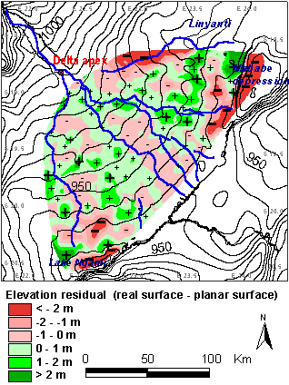

Elevation residual

The map shows the difference
between the real surface (interpolated from measured point data) and a
theoretical planar surface. The planar surface was constructed as a uniformally
sloping surface between the Delta apex and the distal end of the Delta.
The difference (or residual elevation) between the two surfaces is within
3 meters in the central Delta. It is astonishing to see how the channels
are flowing. They are not flowing in the "valleys" or lowpoints. Instead
water flows on heights and slopes. This can happen as the water carries
sand which accumulates on the bottoms of the channel, which grows higher.
The water do not escape the channel to the lower surroundings because the
dense vegetations confines it. Mababe depression and Lake Ngami are the
lowest points - they in fact form depressions without outlets. Lake Ngami
occasionally fills with water during wet years, and both Ngami and Mababe
were large lakes in the past - the old shorelines can still be seen. The
largest anomaly is on the North side of the Delta - towards the Linayanti.
Here a relative depression has formed - a result of movements in the earth´s
crust. This depression is now the steepest gradient out of the Delta. Water
flow in this direction is low, but can potentially become dominant. This
would mean that the Okavago Delta would drain and become dry. The water
would instead feed more flow into the Zambezi.
Click
for next page.